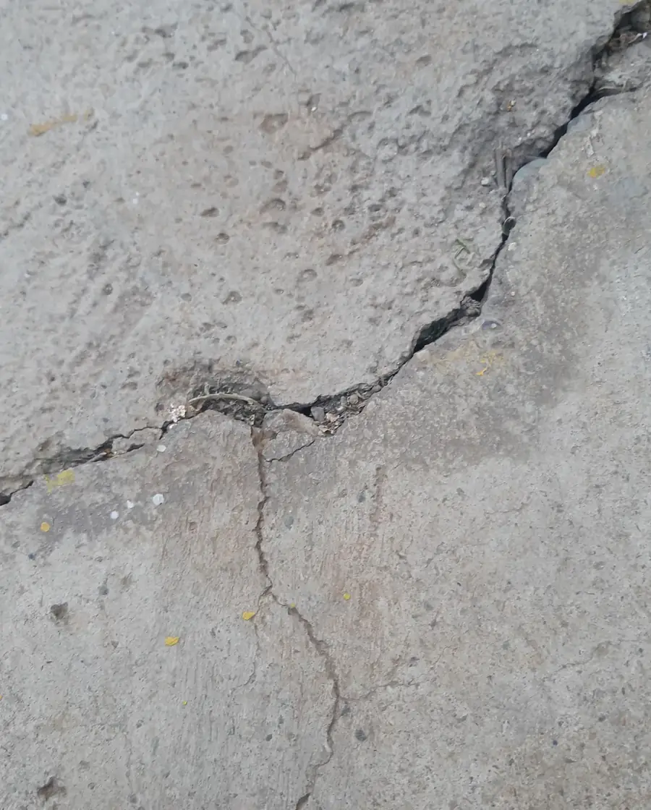
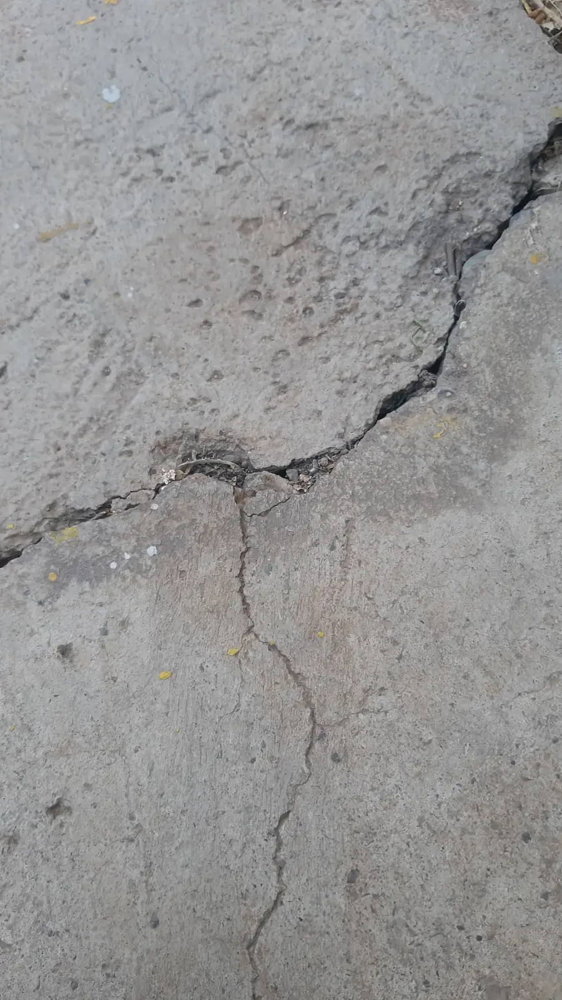
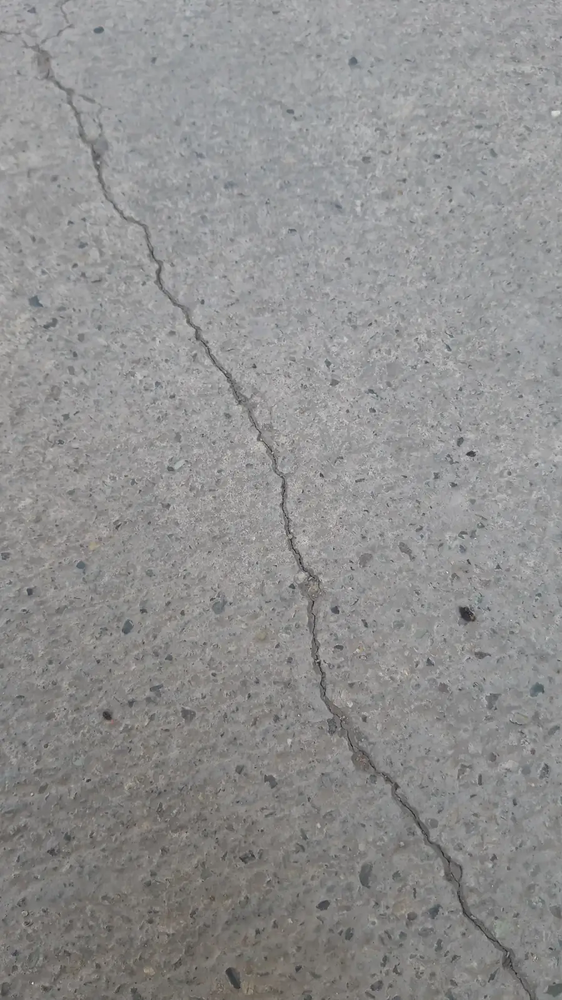

Course project
Asphalt Crack Segmentation
Pixel-level crack detection with a U-Net built from scratch, trained on asphalt photos I took and labelled myself.
- When
- Spring 2025
- Course
- Fundamentals of Computer Vision
- Course grade
- 19.9 / 20

Overview
Finding thin cracks in road surfaces, pixel by pixel: for every pixel, decide whether it belongs to a crack.
What I did
- Photographed cracked asphalt and labelled the cracks myself as polygon masks in COCO format.
- Built a U-Net-style network in PyTorch: four encoder levels, a bottleneck and four decoder levels joined by skip connections.
- Wrote a balanced 70 / 15 / 15 train / validation / test split, the training loop, and an evaluation that reports IoU and draws the predicted cracks over the photos.
- Fought overfitting with augmentation that rotates and scales each photo together with its crack outlines, and with a dropout-regularised version of the network.
What I learned
- Thin cracks are a hard target for IoU: a prediction a few pixels off to the side already loses most of its overlap.
- With a small hand-labelled dataset the network overfits quickly; augmentation and dropout help, but the size and quality of the data matter most.
Gallery

